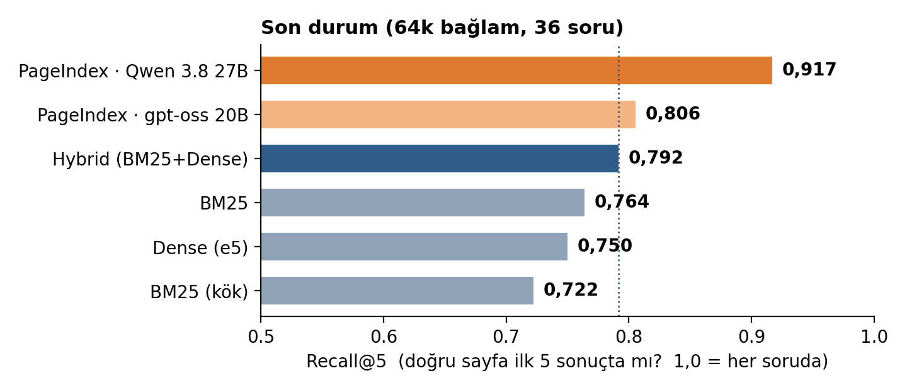
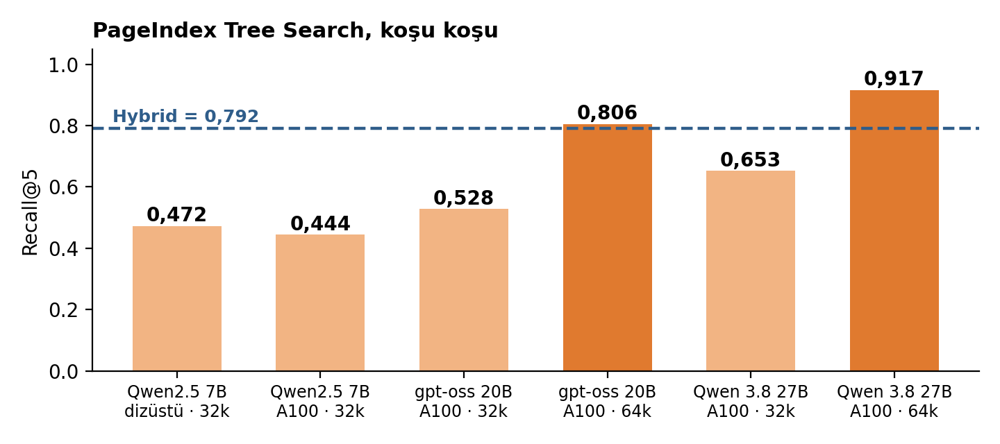
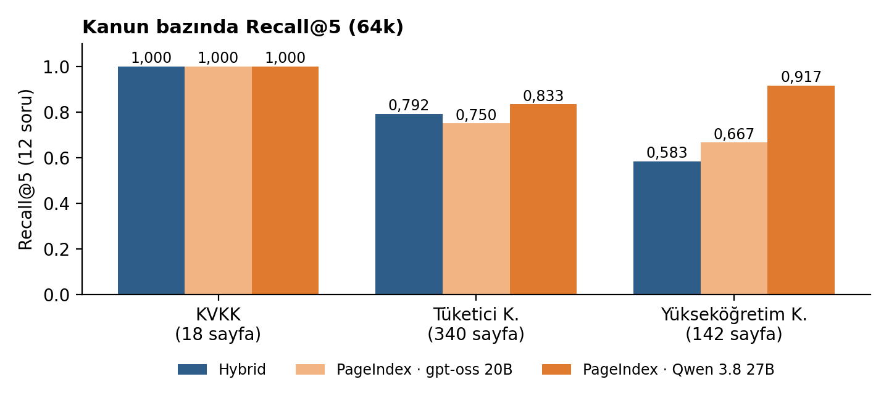

Veri. KVKK (18 sayfa), Tüketicinin Korunması Hakkında Kanun (340 sayfa) ve Yükseköğretim Kanunu (142 sayfa). Her kanundan 12, toplam 36 elle yazılmış soru; dört tip: doğrudan bilgi, yeniden ifade, çeldirici, bölümler arası. Kaynak sayfa denetimine eklenen plan terimi kontrolünde dört soru başarısız oldu; sonuçlarda tutuldu ve duyarlılık analizinde ayrı gösterildi.
Yöntemler. Klasik: BM25, Türkçe köklü BM25, Dense (multilingual-e5), Hybrid (BM25+Dense, RRF). PageIndex: iki ajan varyantı ve LLM Tree Search. Metrikler: Recall@k ve MRR. Başarısız sorgular sıfır sayıldı; yalnızca başlatılamayan sorgular dışarıda kaldı.
| # | Ne yaptık / ne gördük | Nasıl düzelttik | Sonuç (Tree Search R@5) |
|---|---|---|---|
| 1 | Dizüstü bilgisayarda (RTX 3070, 8 GB) Qwen2.5 7B ile ilk koşu. HATAOllama'nın varsayılan 4.096 token bağlamı PageIndex istemlerini sessizce kesiyordu; PageIndex satırları anlamsız çıktı. | Sonuçlar geçersiz ilan edildi; bağlam 32.768'e çıkarıldı, ağaçlar yeniden kuruldu. | — |
| 2 | 32k ile yeniden koşu (6 saat). HATATree Search'te 180 sn'lik istemci zaman aşımı 8 soruyu yarım bıraktı. | Zaman aşımı 30 dk yapıldı, 8 soru yeniden koşuldu. | 0,472 |
| 3 | Sonuç kötü çıkınca soru: dizüstü GPU mu sorunlu? Aynı her şeyle Colab A100'de tekrarladık. | KONTROLKlasik skorlar birebir aynı; PageIndex sadece 15–30 kat hızlandı. | 0,444 |
| 4 | Güncel modeller (Qwen 3.8 27B, gpt-oss 20B), 32k. HATA340 sayfalık kanunun yapısı 32k'ya sığmadı; soru metni kesilip düştü, 13–14 ajan sorgusu hata verdi. | Bağlam 64k'ya çıkarıldı. | 0,653 / 0,528 |
| 5 | Güncel modeller, 64k bağlam. | — | 0,917 / 0,806 |
Satır 4–5'te ilk değer Qwen 3.8 27B, ikinci değer gpt-oss 20B. Hybrid her koşuda 0,792.

| Yöntem (64k, 36 soru) | Recall@1 | Recall@5 | MRR | Soru başına süre |
|---|---|---|---|---|
| Hybrid (BM25 + Dense) | 0,333 | 0,792 | 0,612 | 13 ms |
| Dense (e5) | 0,403 | 0,750 | 0,627 | 14 ms |
| PageIndex Tree Search · gpt-oss 20B | 0,528 | 0,806 | 0,724 | 19 sn |
| PageIndex Tree Search · Qwen 3.8 27B | 0,500 | 0,917 | 0,738 | 27 sn |
Eşleştirilmiş test (Qwen 3.8 27B, 64k). Tree Search − Hybrid: Recall@5 Δ +0,125; %95 GA [−0,028; +0,278]; 8/3/25 kazanım/kayıp/beraberlik; kesin iki yönlü işaret testi p=0,227. MRR Δ +0,126; %95 GA [−0,045; +0,296]; p=0,307.
| Karşılaştırma | Recall@5 Δ [eşleştirilmiş %95 GA] | K/B/B | Kesin p |
|---|---|---|---|
| Tüm 36 soru | +0,125 [−0,028; +0,278] | 8/3/25 | 0,227 |
| Terim kontrolünü geçen 32 soru | +0,156 [0,000; +0,328] | 7/2/23 | 0,180 |
| Genişletilmiş altın etiket, 36 soru | +0,083 [−0,069; +0,236] | 7/3/26 | 0,344 |
Altın sayfa ve taban çizgisi. 6502 için p.139, p.54 ve p.188 eşdeğer kabul edildi; aynı hüküm alternatifi bir ayrı soru hedefi sayılmadı. Hybrid Recall@5 0,792'den 0,833'e, Tree Search 0,917'de kaldı; fark +0,125'ten +0,083'e indi. İlk 5 sayfa baseline'ı genel olarak 0,361'dir (KVKK 1,000; 6502 0,000; 2547 0,083); rastgele sıra beklentisi genel olarak 0,109'dur.
Terim denetiminde kalan sorular: kvkk_6698-paraphrase-2, yuksekogretim_2547-paraphrase-1, yuksekogretim_2547-cross_section-1, yuksekogretim_2547-cross_section-2. Dört soru da ana sonuçlarda sayıldı.

Bu pilotta PageIndex ağaçları (belgelerin bölüm yapısı ve bölüm özetleri) küçük modelle, Qwen2.5 7B ile kurulmuştu; büyük modeller yalnızca arama aşamasında kullanıldı. Sonraki testte ağaçları doğrudan Qwen 3.8 27B ile kuracağız ve aynı 36 soruyla aramayı tekrarlayacağız. Böylece hem ağaç kalitesinin sonuca etkisini göreceğiz hem de kurulumdan aramaya kadar tek bir model kullanan, tutarlı bir yapılandırmayı ölçmüş olacağız.